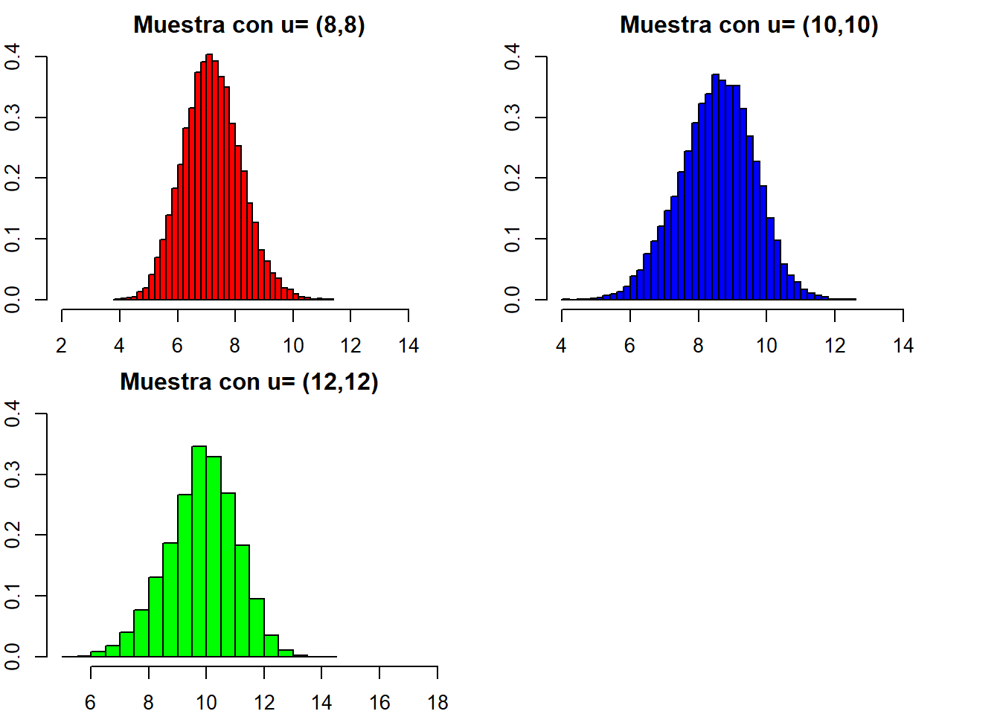
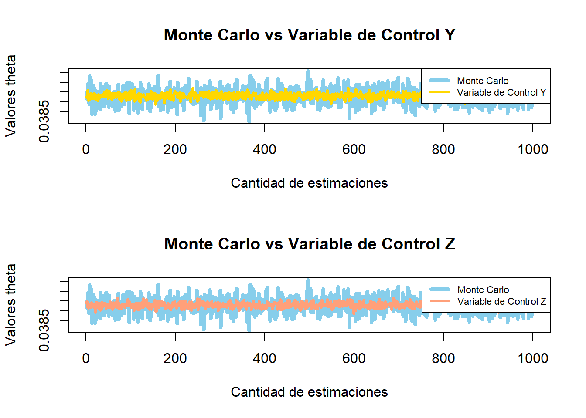

set.seed(2022)
x <- rlogis(n = 20, location = 5, scale =6)Tarea 3
Pregunta 1
a)
Verosimilitud
\[ \prod_{i=1}^{n}f(x_{i}|\alpha,\beta) = \prod_{i=1}^{n}\frac{1}{\sigma} \cdot \frac{e^{(x_{i}-\alpha)/\beta}}{(1+e^{(x_{i}-\alpha)/\beta})^{2}} = \left(\frac{1}{\sigma}\right)^n \cdot \frac{e^{\left(\sum_{i=1}^n x_i-n \alpha\right) / \beta}}{\left(\prod_{i=1}^n\left(1+e^{\left.(x_i-\alpha\right) / \beta}\right)^2\right.} \]
Priori
\[ \pi(\alpha ,\beta)= exp(\frac{-1}{2}(x-\mu)^{T} \cdot \Sigma^{-1} \cdot(x-\mu)) = exp(-\frac{1}{2}(x-\mu)^{T}\left(\begin{array}{cc}3 / 2 & -1 / 2 \\ -1 / 2 & 1 / 2\end{array}\right)(x-\mu)) \]
Posteriori
\[ f(\alpha,\beta|x)= \left(\frac{1}{\sigma}\right)^n \cdot \frac{e^{\left(\sum_{i=1}^n x_i-n \alpha\right) / \beta}}{\left(\prod_{i=1}^n\left(1+e^{\left.(x_i-\alpha\right) / \beta}\right)^2\right.} \cdot exp\left(-\frac{1}{2}(x-\mu)^{T}\left(\begin{array}{cc}3 / 2 & -1 / 2 \\ -1 / 2 & 1 / 2\end{array}\right)(x-\mu)\right) \]
b)
c)
n <- 20
l <- function(alpha,beta){
y <- sum(log(dlogis(x, alpha, beta)))
return(y)
}
f_aux <- function(c0)
{
return(-l(c0[1], c0[2]))
}
c0 <- c(1,1)
minimo <- optim(c0, f_aux, hessian = T)
(x_opt <- minimo$par)[1] 2.172820 6.244866(H_opt <- -minimo$hessian) [,1] [,2]
[1,] -0.16861917 -0.02641077
[2,] -0.02641077 -0.75701599d)
library(mvtnorm)
acept_rech <- function(n, me)
{
m <- matrix(c(me[1], me[2]), nrow = 2)
V <- matrix(c(1, 1,
1, 3), byrow = TRUE, nrow = 2)
S <- solve(solve(V) - H_opt / 2)
mu <- S %*% (solve(V) %*% m - H_opt %*% (x_opt / 2))
f <- function(alpha, beta)
{
return(exp(l(alpha, beta)) * dmvnorm(c(alpha, beta), m, V))
}
g <- function(alpha, beta)
{
return(dmvnorm(c(alpha, beta), mu, S))
}
h <- function(theta)
{
return(f(theta[1], theta[2])/g(theta[1], theta[2]))
}
c <- h(x_opt)
aceptados <- 0
rechazados <- 0
simulaciones <- matrix(nrow = n, ncol = 2)
contador <- 0
while(all(is.na(simulaciones[n, ])))
{
y <- rmvnorm(1, mu, S)
u <- runif(1)
if(u <= (1/c) * h(y))
{
contador <- contador + 1
aceptados <- aceptados + 1
simulaciones[contador, ] <- y
}
else
{
rechazados <- rechazados + 1
}
}
tasa_aceptados <- aceptados / (aceptados + rechazados)
porceentaje_aceptados <- paste0(round(tasa_aceptados * 100, 2), "%")
print(sprintf("La tasa de aprobación fue de: %s", porceentaje_aceptados))
return(list(muestra = simulaciones, tasa_aprobacion = tasa_aceptados))
}e)
#con mu=(8,8)
me1 <- matrix(c(8,8), nrow = 2)
t8_1 <- Sys.time()
lista_res1 <- acept_rech(10000, me1)$muestra[1] "La tasa de aprobación fue de: 38.11%"t8_2 <- Sys.time()
muestra1 <- lista_res1
(t8_2-t8_1)Time difference of 21.21807 secs#con mu=(10,10)
me2 <- matrix(c(10, 10), nrow = 2)
t10_1 <- Sys.time()
lista_res2 <- acept_rech(10000, me2)$muestra[1] "La tasa de aprobación fue de: 36.73%"t10_2 <- Sys.time()
muestra2 <- lista_res2
(t10_2-t10_1)Time difference of 19.569 secs#con mu=(12,12)
me3 <- matrix(c(12, 12), nrow = 2)
t12_1 <- Sys.time()
lista_res3 <- acept_rech(10000, me3)$muestra[1] "La tasa de aprobación fue de: 45.71%"t12_2 <- Sys.time()
muestra3 <- lista_res3
(t12_2-t12_1)Time difference of 14.98721 secsSe puede decir que mientras mayores sean los elementos de la media, mayor será el tiempo de ejecución y que a mayor tasa de aceptacion, menor será el tiempo de ejecución.
f)
par(mfrow=c(2,2), mar=c(2,2,2,2))
hist(muestra1,
main="Muestra con u= (8,8)",
ylim = c(0,0.4),
xlim = c(2,15),
xlab="x",
ylab="Densidad",
prob=TRUE,
breaks=30,
col="red")
hist(muestra2,
main="Muestra con u= (10,10)",
ylim = c(0,0.4),
xlim = c(4,15),
xlab="x",
ylab="Densidad",
prob=TRUE,
breaks=30,
col="blue")
hist(muestra3,
main="Muestra con u= (12,12)",
ylim = c(0,0.4),
xlim = c(5,18),
xlab="x",
ylab="densidad",
prob=TRUE,
breaks=30,
col="green")
Se puede notar que los graficos estan medianamente centrados a la media, y todos son ligeramente asimetricos
Pregunta 2
a)
theta <- function(x){
aux <- x/(1+exp(x))
return(aux)
}
cambio_variable <- function(x){
aux <- (25*x+25)/(1+exp(5*x+5))
return(aux)
}
a <- runif(10000)
monte <- mean(cambio_variable(a))b)
v <- integrate(theta,5,10)$valuec)
fy <- function(y){
return(exp(-1/2) / (1 + y^2))
}
fz <- function(z){
return(z + 1)
}
#primero tomando como variable de control Y
U <- runif(10^5)
X <- cambio_variable(U)
Y <- fy(U)
c_y <- -cov(X,Y) / var(Y)
z1 <- X + c_y*(Y - mean(Y))
#Calculamos la simulación mediante la variable de control
(est_y <- mean(z1)) [1] 0.03982827#ahora se prueba con z como variable de control
U <- runif(10^5)
X <- cambio_variable(U)
Z <- fz(U)
c_z <- -cov(X,Z) / var(Z)
z2 <- X + c_z*(Z - mean(Z))
#Calculamos la simulación mediante la variable de control
(est_z <- mean(z2)) [1] 0.03966443#reduccion de varianza
r_y <- 100*cor(X,Y)^2
r_z <- 100*cor(X,Z)^2
#con z se reduce mucho mas la varianza, puesto que, esta muy correlacionada con Xd)
(error_monte <- 100 * abs(monte - v) / v)[1] 0.002045545(error_y <- 100 * abs(est_y - v) / v)[1] 0.06101542(error_z <- 100 * abs(est_z - v) / v)[1] 0.3506178se puede ver que el metodo con menor error relativo es el metodo montecarlo, mientras que el mayor, es usando la variable de control Z
e)
La profesora mencionó que este item es igual que la c, por lo que da lo mismo cual haciamos
f)
m <- NULL
for (i in 1:1000){
a <- runif(10000)
monte <- mean(cambio_variable(a))
m[i] <- monte
}
q <- NULL
for (i in 1:1000){
U <- runif(10^5)
X <- cambio_variable(U)
Y <- fy(U)
c_y <- -cov(X,Y) / var(Y)
z1 <- X + c_y*(Y - mean(Y))
#Calculamos la simulación mediante la variable de control
(est_y <- mean(z1))
q[i] <- est_y
}
p <- NULL
for (i in 1:1000){
U <- runif(10^5)
X <- cambio_variable(U)
Z <- fz(U)
c_z <- -cov(X,Z) / var(Z)
z2 <- X + c_z*(Z - mean(Z))
#Calculamos la simulación mediante la variable de control
(est_z <- mean(z2))
p[i] <- est_z
}
par(mfrow=c(2,1))
plot(m, type = "l", col = "skyblue", lwd = 4,
xlab = "Cantidad de estimaciones", ylab = "Valores theta",
main = "Monte Carlo vs Variable de Control Y")
# Agregamos a la figura las estimaciones de theta utilizando la variable de control
lines(q, type = "l", lwd = 3, col = "gold")
# Agregamos una leyenda
legend("topright", legend = c("Monte Carlo", "Variable de Control Y"),
col = c("skyblue", "gold"), lwd = 4:3, lty = 1:1, cex = 0.7)
plot(m, type = "l", col = "skyblue", lwd = 4,
xlab = "Cantidad de estimaciones", ylab = "Valores theta",
main = "Monte Carlo vs Variable de Control Z")
lines(p, type = "l", lwd = 3, col = "lightsalmon1")
legend("topright", legend = c("Monte Carlo", "Variable de Control Z"),
col = c("skyblue", "lightsalmon1"), lwd = 4:3, lty = 1:1, cex = 0.7)
Observando los graficos se puede ver que el metodo montecarlo es el de mayor varianza, mientras que los otros restantes tienen un varianza muy parecida, que seria dificil decidir cual de los dos es mejor
Pregunta 3
a)
f<-function(D,x){
aux<- (2*pi)^(-D/2)*exp(-sum((x)^2)/2)
return(aux)
}
valores <- function(n,D){
mu<-NULL
for(i in 1:n)
{
x<-runif(D,-5,5)
a<-f(D,x)
mu[i] <- a
}
return(list(muestra = mu,estimacion = mean(mu), desv = sd(mu),
coef_variacion = sd(mu) / mean(mu)))
}b)
estimacion1<-valores(1000,1)
estimacion1$estimacion[1] 0.09491487estimacion2<-valores(2000,1)
estimacion2$estimacion[1] 0.1003742estimacion3<-valores(3000,1)
estimacion3$estimacion[1] 0.1004306estimacion4<-valores(4000,1)
estimacion4$estimacion[1] 0.1019264estimacion5<-valores(5000,1)
estimacion5$estimacion[1] 0.09914957estimacion6<-valores(6000,1)
estimacion6$estimacion[1] 0.09941792estimacion7<-valores(7000,1)
estimacion7$estimacion[1] 0.09988709estimacion8<-valores(8000,1)
estimacion8$estimacion[1] 0.1017404estimacion9<-valores(9000,1)
estimacion9$estimacion[1] 0.1012352estimacion10<-valores(10000,1)
estimacion10$estimacion[1] 0.1005006c)
t<-seq(1000,10000,1000)
estimaciones<-c(estimacion1$estimacion,estimacion2$estimacion,estimacion3$estimacion,estimacion4$estimacion,estimacion5$estimacion,estimacion6$estimacion,estimacion7$estimacion,estimacion8$estimacion,estimacion9$estimacion,estimacion10$estimacion)
desviacion_estandar<-c(estimacion1$desv ,estimacion2$desv, estimacion3$desv, estimacion4$desv, estimacion5$desv, estimacion6$desv, estimacion7$desv ,estimacion8$desv, estimacion9$desv ,estimacion10$desv)
coeficiente_de_variacion<-c(estimacion1$coef_variacion, estimacion2$coef_variacion, estimacion3$coef_variacion, estimacion4$coef_variacion, estimacion5$coef_variacion ,estimacion6$coef_variacion, estimacion7$coef_variacion, estimacion8$coef_variacion, estimacion9$coef_variacion, estimacion10$coef_variacion)
cbind(t,estimaciones,desviacion_estandar,coeficiente_de_variacion) t estimaciones desviacion_estandar coeficiente_de_variacion
[1,] 1000 0.09491487 0.1326826 1.397911
[2,] 2000 0.10037425 0.1362238 1.357159
[3,] 3000 0.10043062 0.1362357 1.356515
[4,] 4000 0.10192642 0.1363568 1.337796
[5,] 5000 0.09914957 0.1344987 1.356523
[6,] 6000 0.09941792 0.1354106 1.362034
[7,] 7000 0.09988709 0.1351775 1.353303
[8,] 8000 0.10174042 0.1357217 1.334000
[9,] 9000 0.10123519 0.1348614 1.332160
[10,] 10000 0.10050062 0.1353821 1.347077